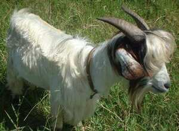
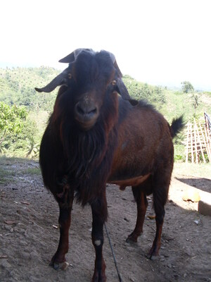

kambing  
/kambiŋ/
n.
“goat”
n.
Capra_spp.
goat
Ka kambing iyan ka ayam ne egpekeiling te baka piru deisek dè sikandin. Dakel wey malabeg ka laheng te baka piru deisek dè wey beyew malahiting ka laheng te kambing. Due degma sungey te kambing wey bulbulen kenè ne iling te baka ne marilag dè se bulbul.
Due kambing ney piru sikan ma se kenè egkeuyag su malasi egderalu ne egkataman ne egpatey e.
We had a goat but it doesn't survived because it had been got sick all the time and died at last.
Wrd.Gloss: goat
Eng. goat; kid
Tag. kambíng
Ceb. kanding
Ilo.: kálding
OCM: Fauna (136)
DDP: Hoofed animals (1.6.1.1.3), Goat (6.3.1.3)
Online dict status: -
Usage level: M
Updated by: RJH,AAA,TME,NJK
Last updated: 13/Oct/2009
"kambing" in text "Aurelio's Marriage"
"kambing" in text "Aurelio's Marriage"
"kambing" in text "Me mananap"
This page last updated: 19/May/2012
Copyright © 2009-2010, Matigsalug Language Christian Association, Inc